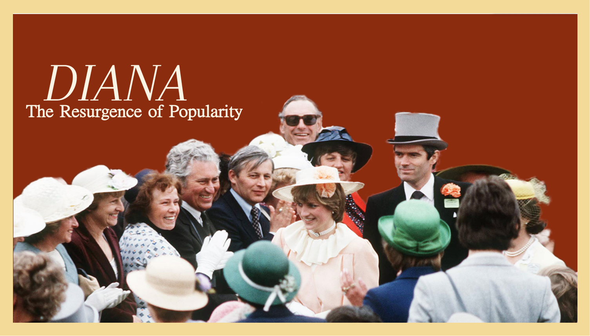
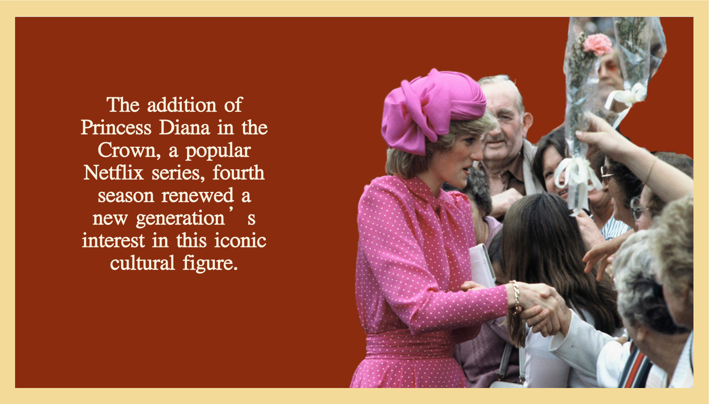
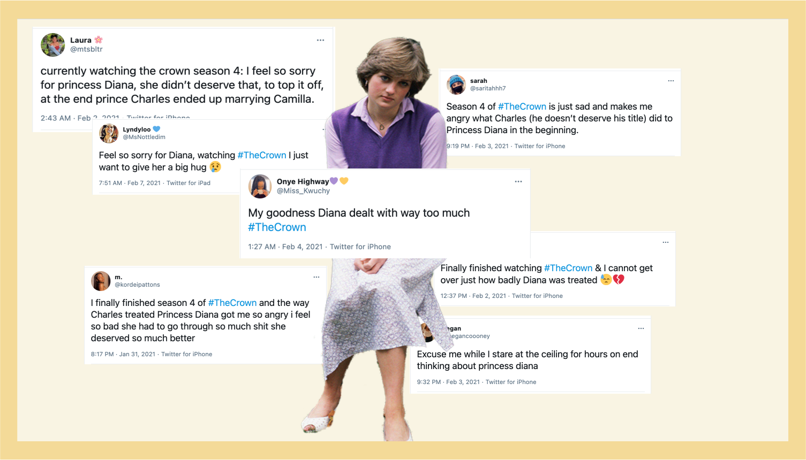

The project was a webpage dedicated to highlighting the renewed interest in the late princess and it's similarity to the adoration she recieved during her life.

The site incorporated collage-style found images of the princess for navigation. The narrative style of the project includes unique copy written by myself and other media such as tweets and videos.

The site was an exercise in understanding navigation through linked pages.
A link to the working site can be found
here.